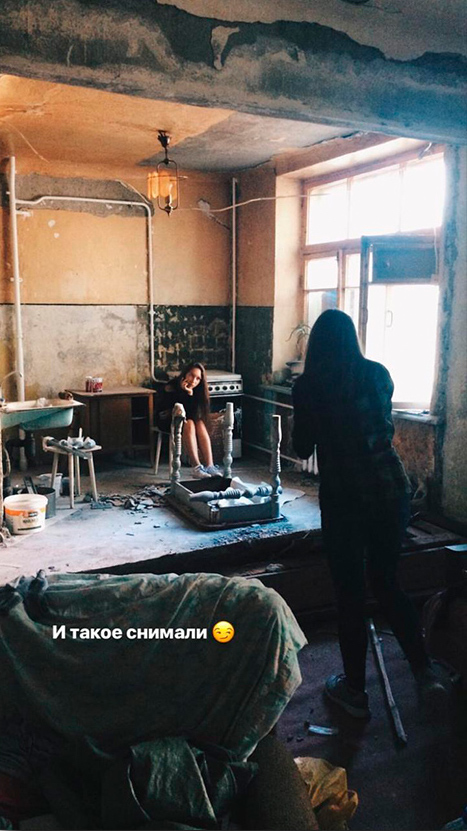
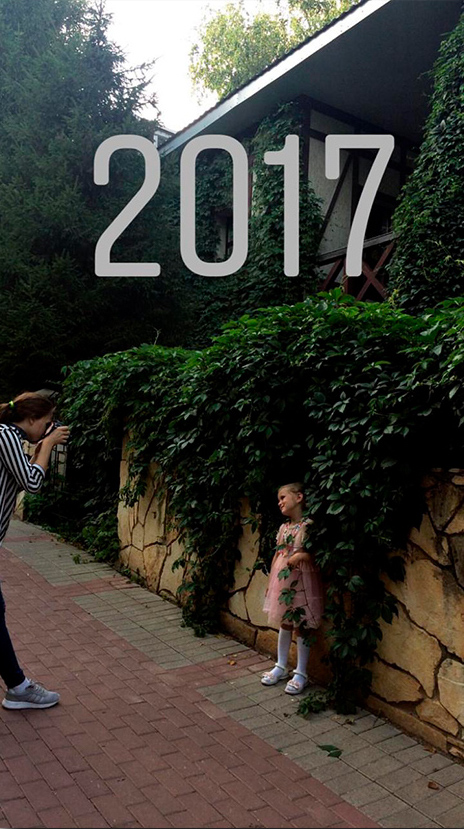

Как будет проходить наша фотосессия?
У вас есть дата, место и время. В нужный день, в нужное время мы должны с вами встретиться в выбранном месте.
Обычно я приезжаю немного раньше , чтобы изучить локацию и прикинуть пару кадров в голове, где бы я могла вас красиво поставить. Не беспокойтесь, я позабочусь о том,чтобы ваше время прошло легко и непринужденно и сделаю так, чтобы от фотосъемки у вас остались только хорошие эмоции.
Переживаете о том,что не умеете позировать?
Не стоит, ведь с этим я тоже вам помогу :)
Индивидуальная фотосъемка включает в себя прогулку 1-1,5 часа.
За это время работы я гарантирую вам от 30 обработанных кадров (Цветокор+кадрорование), включающих в себя 15 кадров с художественной обработкой (возможная пластика/ретушь).
Готовые снимки я присылаю вам в течение 2х недель. В случае, когда я не успеваю отдать обещанные кадры, я делаю скидку на следующую фотосессию. Так же за символическую доплату я отправляю весь исходный материал.
Как попасть на съемку ко мне?
Для начала, вам необходимо связаться со мной. Сделать это можно через сайт,
Vk,
Instagram или
WhatsApp.
Написали? Отлично! Тогда идем дальше!
Я предлагаю вам свободные даты, и мы вместе обговариваем время съемки. С образом и местом я всегда с радостью помогу. Ваш фотограф постоянно в поиске интересных мест, поэтому в запасе у меня найдется что-нибудь и для вас :)
Дату, место и время выбрали? Готово! Остается дождаться заветного числа и начать творить.

Как попасть на съемку ко мне?
Для начала, вам необходимо связаться со мной. Сделать это можно через сайт,
Vk,
Instagram или
WhatsApp.
Написали? Отлично! Тогда идем дальше!
Я предлагаю вам свободные даты, и мы вместе обговариваем время съемки. С образом и местом я всегда с радостью помогу. Ваш фотограф постоянно в поиске интересных мест, поэтому в запасе у меня найдется что-нибудь и для вас :)
Дату, место и время выбрали? Готово! Остается дождаться заветного числа и начать творить.
Что происходит после съемки?
Несмотря на то, что все съемки проходят легко и быстро для клиентов, я не заканчиваю работу с вами.
Мне предстоит работать над кадрами еще в течение 2х недель. На протяжении моей работы я стараюсь передать через кадры все настроение и атмосферу съемки, подчеркнуть вашу индивидуальность и добиться желаемого результата.
Если вам нравится мой стиль и качество работ, то я буду рада поработать с вами!